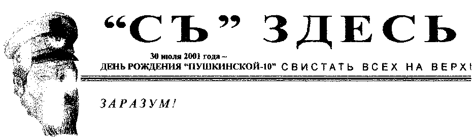
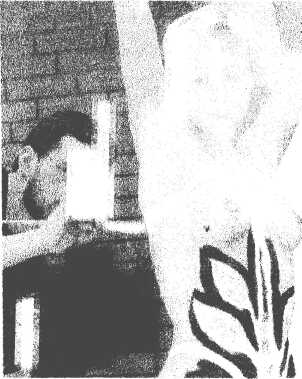
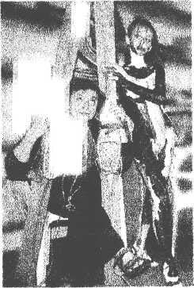
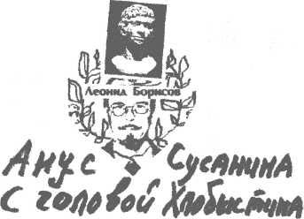
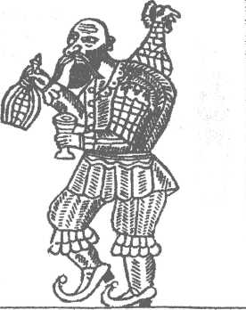
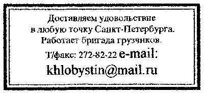

| МЕДИА ВОЛНА | |
|---|---|
|
Редакция "Съ" поздравляет Евгения Михайловича Орлова с назначением его на должность директора "Музея Нонконформистского Искусства" и желает ему успехов. Художественная общественность с надеждой смотрит на Музей Нонконформизма. Петербургский Архив и Библиотека добровольно присоединились к Музею Нонконформизма, Сусанин, как ярый монархист всегда выступал за сильную централизованную вертикаль власти в Музее Нонконформизма. Главвред. |
В середине 90-х в СПб сформировалась целая генерация художников-имитаторов, которые не имея собственных новаторских идей, готовы послушно следовать указке кураторов ради попадания в "актуальный дискурс". Сегодня они перформансисты, завтра - феминисты, инсталляторы, медиа-художники и т.д. Естественно, они не интересуются традициями местного неофициального искусства и почитают заморские образцы. Арт-медиа-фест, центром которого стала Пушкинская-10, украшал съезд российских медиа магнатов и демонстративно не учитывал традицию родоначальников отечественного медиа-искусства, зародившегося в городе в 1989г. как "Пиратское телевидение" и развитую на "Пушкинской" в Галерее-21 ("Техно Арт Центр"). По ходу фестиваля галерея-мусорщик "Пылегон" устроила засаду в узкой подворотне между дворами. На посетителей набрасывались специально натренированные дети, обливавшие их яркими красками. Поэтому лучшими выставками медиа-арта были признаны экспозиция посвященная жизни и творчеству медиа-магната И.О.Сусанна, телевыставка "Образ Тимура Новикова в Программе "ДЕМО" в НАИИ и выставка "Медиа-привет" из коллекции ГРМ в Мраморном дворце. В зале "Фиш Фабрик" был устроен торжественный банкет в честь победителя "Медиа-форума" - издательства "Сусанинъ". М.А.Гельман вручил гран-при победителям. Поблагодарив за гран-при редакторы "Съ" А.Хлобыстин и Т.Новиков выступили с ответными речами перед меди-магнатами, бутербродными журналистами и медиа-тусовщиками. Марк Штепсель |
| ТРИ БОГАТЫРЯ В РУССКОМ |
|---|
|
2 июля в Русском музее (Мраморный дворец) откроются сразу три персональные выставки замечательных представителей петербургской экспрессивной живописи - двух ветеранов Пушкинской-10 - Бориса Кошелохова и Олега Котельникова, а также Инала Савченкова, Все трое - ветераны андеграунда и выдающиеся педагоги и оригиналы. Три Санкт-Петербургских неоэкспрессиониста представляют три поколения: Б. Кошелохов (Кошелот) - 1946 г.р., О'Котельников (Японец) -1958 г.р., И, Савченков (Водолаз) -1966 г.р. В 1986 г. И. Савченков, член группы "Новые художники", спустил в воды Невы все свои произведения. Спустя пятнадцать лет он осознал свою ошибку и теперь работает водолазом, пытаясь отыскать утраченное, |
| ТРУСЫ! |
|
В салоне В.Кацубы заметная в городе перформансистка Б.Матвеева устроила проверку на "трусость". В разгар праздника она решительно потребовала всех гостей снять трусы. Затее был придан характер спортивного состязания - "снимание трусов на скорость". Обнаружилось, что некоторые гости, в том числе представитель "Бритиш кансел", явились в салон уже без трусов, а одна москвичка мотивировала свой отказ сдать трусы их высокой стоимостью (US$ 60). Апофеозом акции явился момент, когда перформансистка все собранные трусы выбросила с балкона, что напомнило ей "стаю вольных птиц". По замыслу художницы, акция учитывала и шок, который должны были испытать по утру владельцы дорогих иномарок, паркующихся во дворе Толстовского дома, обнаружив на ветровых стеклах трусы различных конфигураций. По мнению акционистки, покрой, расцветка, запах, размер, износ и прочие параметры трусов создают полный портрет их хозяина. Сейчас по этим приметам милиция пытается найти хулиганов. Г.Кальсон |
| ДЕНЬ УДОВЛЕТВОРЕНИЯ |
|
Слухи о закрытии НАИИ (см. СЫ №) оказались преувеличенными. 15 июня в Плавучем Дворце Культуры -137 неоакадемисты бурно отпраздновали национальный "День Удовлетворения" и подведение итогов прошлого тысячелетия. Не отрекшийся глава НАИИ Т.П.Новиков раздавал награды академикам. Боевые знамена и грамоты получили в награду 16 человек. Галерея Д-137 вручала свои призы. На церемонии выступал детский оперный театр "Ад Либитум" и ансамбль старинной музыки. Праздник украсили московский художник С.Шутов, прибывший с триумфом с Винецианского Биеннале, профессор Суриковского института Айдан Салахова, Г.Гурьянов, ставший лауреатом премии Дж.Поллака и многие другие звезды художественной сцены. А. Негодяев |
ПО ПУШКИНСКОЙ-10 ХОДЯТ ГОЛЫЕ | ||
|---|---|---|
|  |
Запоздало услышав о выставке "Исторические костюмы петербургских
художников", |  |
| 30 июля 2001 года - ДЕНЬ РОЖДЕНИЯ "ПУШКИНСКОЙ-10" СВИСТАТЬ ВСЕХ НА ВЕРХ! |
|---|
|
АБСТРАКЦИОНИСТЫ В РУССКОМ МУЗЕЕ | АЙ-Я-ЯЙ, ДЕДУШКА... | |
|---|---|---|
|
В ГРМ прошло совещание директоров малых музеев и галерей по подготовке фестиваля "Русского абстракционизма" зимой 2001-2002г.г. Часть выставки Русского Музея развернется и на Пушкинской-10. М.Савельева |  |
Помимо многих негативных качеств у Сусанина обнаружилось еще одно. Журналистское расследование газеты "КоммерсантЪ" раскрыло, что мерзкий старикашка чудовищно завистлив. В "СЫ" "хроника художественных и скандальных событий сочетается с нападками на более успешных коллег, - пишет А.Кашинская - Круг друзей и круг врагов газеты (архива) вырисовывается сразу." Сообщите А.Кашинская, Вы друг или враг? Адам Адский |
| СУСАНИН-БАРМАЛЕЙ |
|---|
|
Специальное приложение. |
|
Гай Юлий Цезарь Рыбаков писал на стенке Гельман, Гельман, Ваши "сети" привезли нам Собачья жизнь у Кулика Олега - он удивляет ВЛАДимир ЛЕНин Гаврильчик приплыл из Света КОзак - козАк, а не коза. |
Мудила Бреннер залетный Герострат - нагадит Зубаст Зубков и беспредметен и чашекуполен Драгомощенко (на самом деле Дрищенко) Писака есть Голынко-Дристер, Никифоров не пьет спиртного, кефир его |
| ЛЕГЕНДЫ О БОБЕ | |
|---|---|
|
Одна из посетительниц студии |
 |
|
КРАСНЫЕ-НА ПУШКИНСКОЙ, ЧЕРНЫЕ - В ЭРМИТАЖЕ | ИЗ ИНФОРМИРОВАННЫХ ИСТОЧНИКОВ |
|---|---|
|
Если в доме заводятся рыжие муравьи, то хозяева его бросают. На выставке в Галерее-103 дубовых истуканов В.Морозова из них выползли красные муравьи. При сохранении темпов их размножения к сентябрю Пушкинскую наводнят полчища красных муравьев. Зеленые! Встанем на защиту Пушкинской, сохраним экологический баланс, изгоним непрошеных красных пришельцев! Помни! Художник-неряха может встать на сторону красных! Директора крупнейших музеев современного искусства, искусствоведы, чиновники, дипломаты и журналисты приехали в Эрмитаж из Франции на открытие выставки их живого классика Пьера Суляжа. Художник выставил в Николаевском зале по-разному покрашенные черной краской гигантские полотна. Публика с вымученно умными лицами слушала речи министров в стиле "в одном черном-черном доме жил черный-черный черт...". Все было похоже на очередную демонстрацию знаменитого платья голого короля. Детей на церемонию на этот раз не пустили. Присутствовал и сам 85-летний король французской живописи Пьер Суляж. За художником стоят миллионы французских кутюрье, заинтересованных в магистральности главного цвета Экзистенциализма. А.А. Апчхиполитов |
21 июня в СПб прибыла видный деятель международного движения Лени Рифеншталь. Подруга Веры Чеховой и Гитлера все годы беззаветно работала на советскую разведку и только в 1976г. легла на дно. В Персидском заливе ей удалось заснять секретные передвижения американских подводных лодок. На закрытой пресс-конференции в отеле Европа Лени заявила о своей готовности через две недели нырнуть в Баренцево море для съемок фильма о затонувшей лодке. Лени никогда не переставала посылать сообщения в "центр" со времени съемок фильма о Вермахте. Дважды Герой Советского Союза, генерал-майор ГРУ, типичный представитель петербургской интеллигенции, Елена Ивановна Сусанина-Рифеншталь вспоминает, что самым трудным было передовать сообщения из американского концентрационного лагеря, где она провела три года. После войны Елена выполняла сложные задания советской разведки в Центральной Африке. Также, она содействовала работе знаменитой "Капеллы", "Оксфордской пятерки", помогала Филби, супругам Розенберг и Аарону Беккеру, которого завербовала Вера Мухина в Париже в 20-е годы. В 1999г, Лени получила ранение и чуть не погибла в крушении вертолета, организованном в Африке Беном Ладеном. В СПб ветеран прибыла за очередной правительственной наградой, для чего в северную столицу прилетел ее коллега по работе в Германии президент Путин. Также, по личной прозьбе героя в СПб привезли из Москвы памятную ей вещь - китель Гитлера. Звезду Героя России президент вручил отважной девяностодевятилетней разведчице в Эрмитажном театре 22 июня 2001г. Они беседовали по-немецки. На Пушкинской-10 в ПАиБНИ и НАИИ прошли выставки, посвященные работе Рифеншталь над фильмом "Олимпия". Демократы Ковальский и Орлов выставки проигнорировали, в то время как В. Воинов в архиве вывесил портрет Гитлера в окружении военноначальников, а Л.Борисов при просмотре фильма в НАИИ кричал; "Гитлер - вот настоящий мужик!" Кирилл Мюллер |